Hover over an object to explore it. Click to pin.Tap an object to explore it.
Overgrown
—
Generated inputOurs, same camera and lightOurs, relit
Assets in the paper
The examples shown in the paper figures.
Vine-covered clockA grandfather clock wrapped in thick climbing vines and flowering morning glories, ferns sprouting from the cracked face, ivy tendrils coiled around the pendulum, hyperrealistic renderButter croissantA single butter croissant with a crescent form built from a tapered dough triangle rolled into a coil, showing a swollen middle and thinner curled tips. The exterior is deep golden and glossy from egg wash, with paper-thin laminated layers separating into flaking shards along the ridges, while a torn end reveals an open honeycomb crumb of thin translucent dough walls and irregular air pockets.Cable-knit beanieA chunky hand-knit wool beanie with a folded double-thick brim in wide ribbing, a crown of thick twisting cable-knit columns separated by narrow purl valleys, and a large faux-fur pompom on top. The heathered oatmeal yarn is fuzzy with loose fibers rising from every stitch, and the cream-colored pompom is a dense sphere of long, slightly translucent synthetic hairs with gently curved tips.Rocking horseA Victorian rocking horse carved from wood with a dappled grey painted coat, mounted on a bow rocker of two long curved rails. It has a real horsehair mane and tail in coarse cream strands, glass eyes, a leather saddle with brass studs, stirrups on leather straps, and a red-and-black bridle with a bit and reins. The paint is crazed with fine cracks over the curved body.Barn owl, perchingA barn owl in an upright perching posture with a heart-shaped facial disc of stiff white feathers edged in tawny brown, dark eyes, and a small hooked beak. Its back and wings are golden-buff finely speckled with grey and white, the wing feathers layered in overlapping rows with visible barbs, and the breast is soft white down. Long feathered legs end in curved talons.DreamcatcherA dreamcatcher with a hoop of bent willow wrapped in tan suede lacing, an inner web of thin waxed sinew woven in a spiraling net of diamond openings toward a small central hole, with glass seed beads and one round turquoise bead strung into the web. Three leather cords hang from the bottom, each threaded with wooden beads and ending in a bundle of long striped pheasant and white goose feathers.Silk tasselA large silk drapery tassel with a turned wooden mold head wrapped in gold and burgundy silk thread in a herringbone pattern, a decorative ruff of looped bullion cord, and a full skirt of hundreds of fine silk threads hanging straight to a common length. The silk has a strong anisotropic satin sheen, and a thick braided loop rises from the top of the head.Echeveria rosetteAn Echeveria succulent rosette with about forty thick, spoon-shaped leaves arranged in tight spiraling layers, each leaf tapering to a small pointed tip and edged with a thin translucent margin. The leaves are pale blue-green with a powdery farina bloom that gives a soft matte velvety surface, and the outer leaves show pink and lavender blushes. The compact plant sits on a short thick stem.Barn owlA barn owl with a pale, heart-shaped facial disc, a compact hooked beak, and a broad body enclosed by folded buff-and-gray wings. Fine facial feathers form dense concentric borders around dark glossy eyes. The wing surfaces combine smooth overlapping flight feathers with softer fringed margins, and the short feathered legs end in pale, textured toes with sharply curved talons.Luna mothA luna moth with a stout, softly furred body, feathery antennae, and broad pale green wings arranged in a shallow spread. Each hindwing extends into a long, narrow curved tail. Fine overlapping scales give the wing surfaces a satin texture, with small translucent eyespot centers, darker marginal bands, and delicate veins beneath the thin membranes.Red grapesA fresh cluster of red table grapes attached to a dry, branching woody stem. Each grape possesses a taut, semi-translucent skin coated in a thin, powdery white natural bloom, displaying soft internal light scattering and deep ruby tones beneath the matte surface dust.Witch's butter fungusA jelly mass of witch's butter fungus oozing from a dead branch, translucent golden orange lobes wrinkled and brain-like, glistening gelatinous surface, hyperrealistic macro renderBird's nest fungiA colony of bird's nest fungi nestled in wood mulch, tiny cup-shaped nests each holding several spherical spore packets like miniature eggs, hyperrealistic macro 3D scanPlumose anemonesA dense cluster of plumose sea anemones attached to submerged rock, hundreds of feathery translucent tentacles swaying from each individual, pink and orange column bases, hyperrealistic underwater renderChristmas tree wormsA Christmas tree worm colony embedded in brain coral, dozens of tiny spiraling feather-like crowns in electric blue yellow and crimson jutting from calcified tubes in the coral surface, hyperrealistic marine renderCicada huskA cicada exoskeleton still clinging to tree bark, translucent amber husk split down the back, every delicate segment leg and eye cavity preserved in brittle chitin, hyperrealistic macro 3D scanOstrich plumeA large ostrich plume feather, thousands of long loose barbs cascading from a central rachis in fluffy downy sprays, soft ivory fading to grey at the base, hyperrealistic feather renderFur coatA brown fur coat with two long sleeves, a broad collar and an open front. Dense, fine strands of fur cover the body, collar and turned-back cuffs, giving the garment a soft, shaggy appearance. Hyperrealistic garment render.Saguaro trunkA section of saguaro cactus trunk, deep vertical pleated ribs running top to bottom, clusters of long yellow spines at each areole, rough waxy green skin, hyperrealistic plant renderPrickly pearA prickly pear cactus cluster with ripe fruits, flat oval pads covered in dense glochid tufts and longer spines, magenta fruits with fine bristles, hyperrealistic plant renderPitcher plantA pitcher plant (Nepenthes) with lid open, curved tubular trap half-filled with digestive fluid, waxy slippery interior walls, nectar glands on the rim peristome, hyperrealistic plant renderBaobab trunkA young baobab tree trunk, smooth bulbous swollen gray bark with deep stretch-mark folds and gnarled buttress roots at the base, hyperrealistic tree renderAmmonite fossilA polished ammonite fossil in cross-section, iridescent spiral chambers lined with mother-of-pearl, some chambers filled with calcite crystal druzy, hyperrealistic fossil renderMossy typewriterAn abandoned typewriter completely overtaken by moss and ferns, keys barely visible under velvety green growth, small fern fronds unfurling from the carriage, hyperrealistic renderSunken pianoA sunken upright piano on the seabed, exterior encrusted with mussels and barnacles in thick colonies, seaweed trailing from the keyboard, hyperrealistic underwater renderOvergrown armourAn ancient suit of plate armor propped in a corner, every joint and crevice packed with cushions of emerald moss and sprouting grass blades, rust streaks down the metal, hyperrealistic render
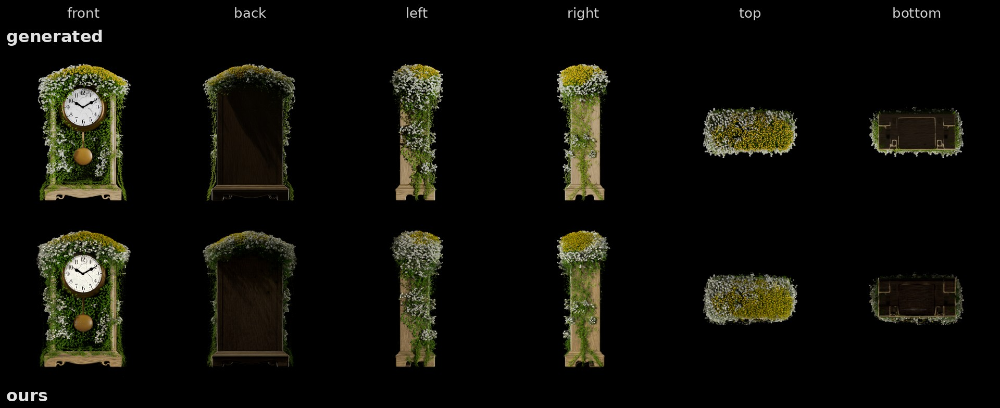
Grandfather clockA grandfather clock wrapped in thick climbing vines and flowering morning glories, ferns sprouting from the cracked face, ivy tendrils coiled around the pendulum, hyperrealistic renderShipwreck bowA shipwreck bow fragment on the sea floor, wooden timbers transformed into coral reef, soft corals sponges and tubeworms covering every surface, fish sheltering within, hyperrealistic marine renderBeehive combA cross-section of active beehive with exposed comb, layered vertical wax sheets with honey stores capped in white wax, brood cells sealed with tan cappings, queen cell protruding, bees crawling throughout, hyperrealistic 3D scan
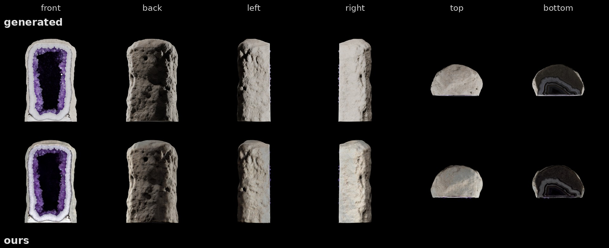
Amethyst geodeA tall amethyst cathedral geode standing upright on its own flat-cut base, with a rough, knobby grey-brown basalt exterior and a deep open cavity running most of its height. The cavity is lined with densely packed translucent violet quartz points, deepest purple at their tips and nearly colorless at their bases, and the polished rim around the opening shows concentric bands of white and grey agate over a thin glassy chalcedony layer.
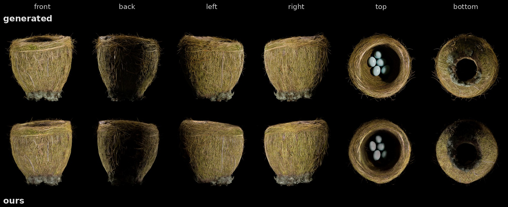
Robin's nestAn American robin's nest, a deep cup woven from coarse grass stems, fine twigs, and strips of bark, with an inner mud layer and a smooth interior finish of fine dry grass. Four smooth glossy pale blue eggs sit inside. Loose grass blades and plant fibers stick out irregularly from the outer wall, and patches of dried moss cling to the base.
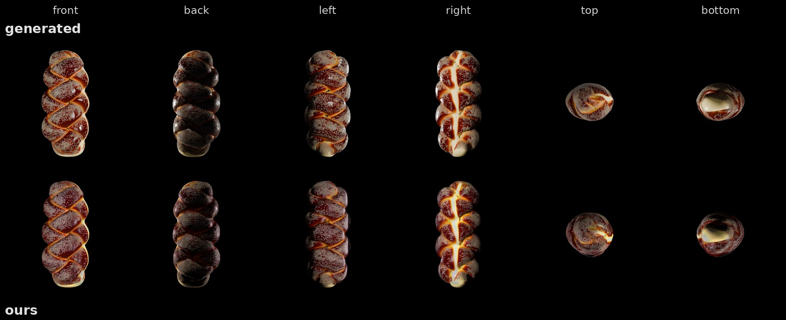
Braided challahA six-strand braided challah loaf, tall and oval, with the plaited strands crossing over one another in a tight interlocking pattern that swells at the center and tapers at both ends. The crust is deep mahogany and glossy from egg wash, dusted with sesame and poppy seeds that collect in the seams between strands, with pale cream dough exposed in the stretched gaps.
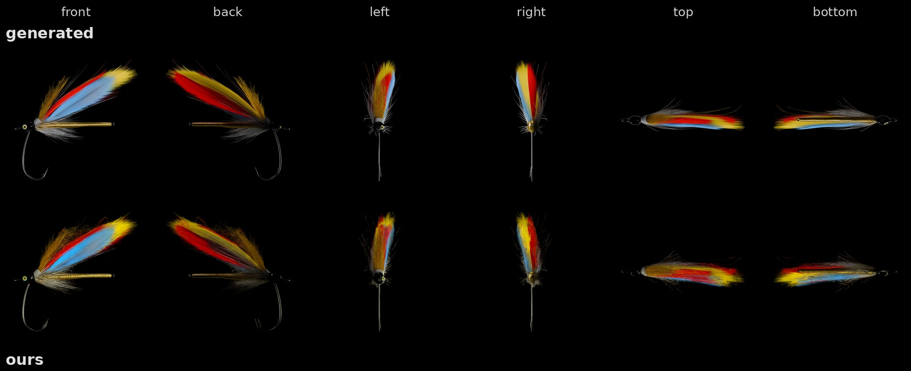
Salmon flyA classic fully dressed salmon fishing fly on a long black hook, with a body of layered silk floss and wrapped gold tinsel ribbing, a spiky throat hackle, and married wing slips of dyed goose and turkey feathers in red, yellow, and blue. A topping of golden pheasant crest curves over the wing, jungle cock eye feathers flank the sides, and the head is glossy black lacquered thread.
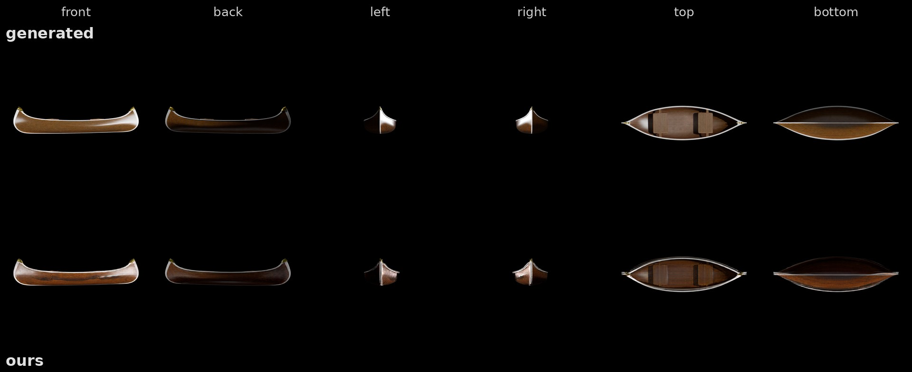
Cedar-strip canoeA cedar strip canoe with a hull of narrow alternating light and dark cedar strips running lengthwise under a clear glossy fiberglass and varnish coating, so the wood grain and strip seams are visible. It has ash gunwales, hand-caned seats woven in an open hexagonal pattern, a curved center thwart, and brass stem bands on the upturned bow and stern. The hull interior shows the same strips under clear finish.
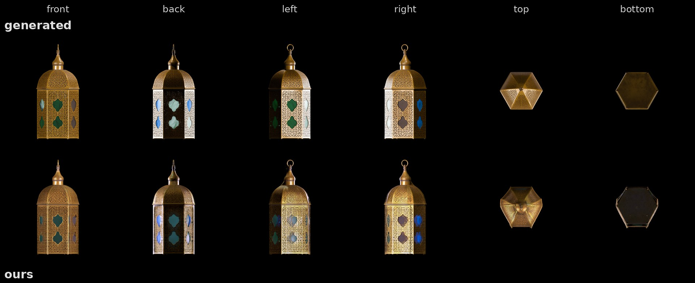
Moroccan lanternA Moroccan lantern with a hexagonal brass body pierced in dense arabesque patterns of tiny stars and interlocking geometric openings, a domed top with a finial and hanging ring, and side panels of colored stained glass in amber, blue, and green set behind the pierced metal. The brass has a warm antique patina with slight tarnish, and the glass is translucent with a rippled hand-poured texture.
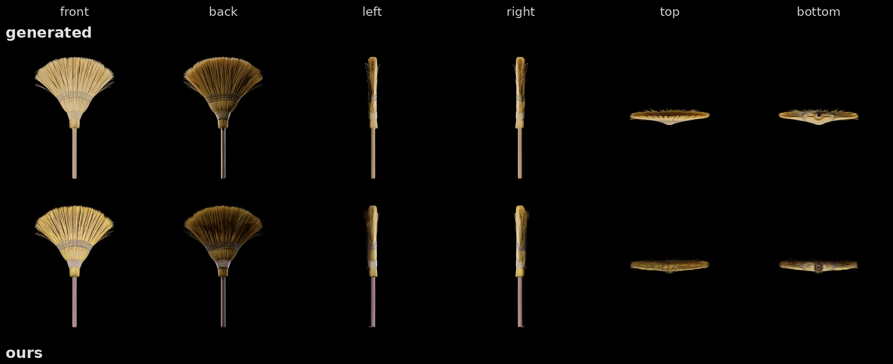
Corn broomA traditional corn broom with a long hardwood handle, bound to a thick head of stiff broomcorn fibers by several rows of wire wrapping and tight cross-stitched cord bands that flatten the head into a fan. The fibers are straw-yellow with fine ridges and taper into splayed fraying tips, and the topmost fibers are folded over the handle beneath the binding.
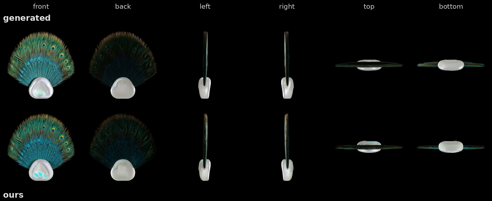
Peacock feather fanA mature peacock feather fan assembled with overlapping tail feathers anchored in a carved mother-of-pearl base. Each feather features a central chitinous shaft supporting thousands of microscopic, iridescent barbules that shift natively between brilliant teal, violet, and gold. The pearlescent shell base exhibits smooth, milky translucency with soft rainbow sheen across its sculpted curves.
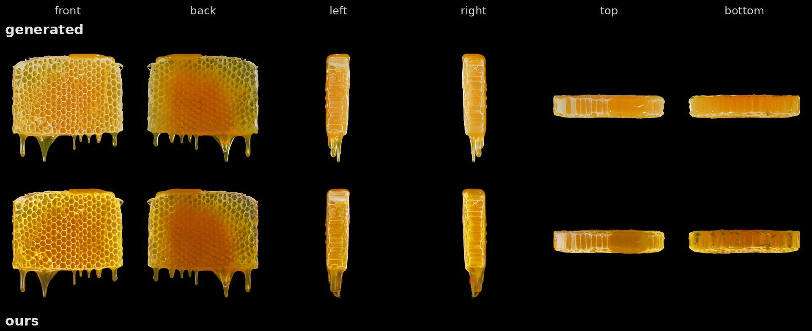
Honeycomb sliceA slice of fresh honeycomb overflowing with viscous, amber-colored raw honey. The rigid hexagonal beeswax cells are semi-translucent with thin, natural cell walls, while the thick honey creates smooth, refractive droplets bridging across cell openings. Small suspended wax particles and air bubbles add internal depth beneath the glossy liquid surface.
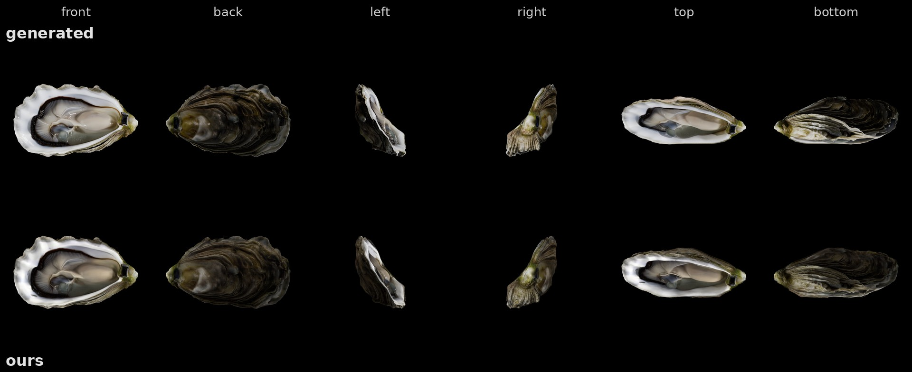
OysterA fresh, wet oyster on the half shell showing a glistening, irregular mollusk body with semi-translucent gray-white mantle edges, a dark visceral mass, and pooled clear liquor resting inside a rough, layered, and craggy calcium carbonate shell.
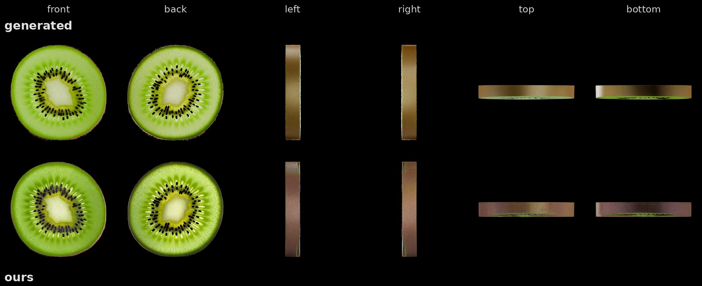
Kiwi sliceA slice of kiwi fruit displaying a bright green translucent pulp center surrounded by a ring of small, opaque black seeds radiating outward toward a thin, fuzzy brown skin.
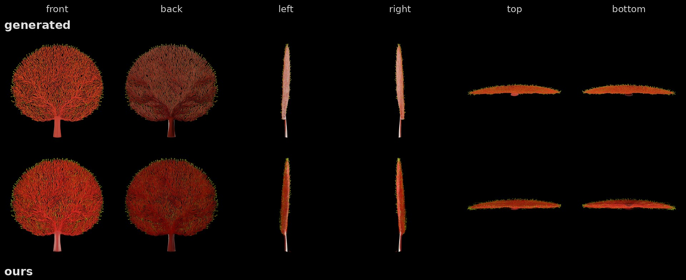
Gorgonian sea fanA large gorgonian sea fan, intricate lattice of reddish coral branches forming a delicate flat web, tiny extended feeding polyps along every branchlet, hyperrealistic photogrammetry scan
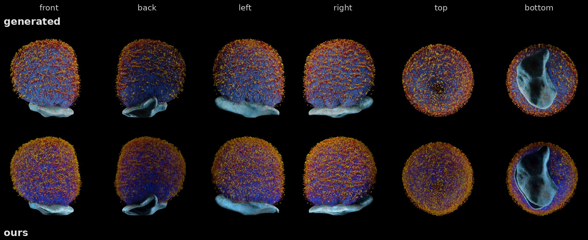
Tube-worm coralA Christmas tree worm colony embedded in brain coral, dozens of tiny spiraling feather-like crowns in electric blue yellow and crimson jutting from calcified tubes in the coral surface, hyperrealistic marine render
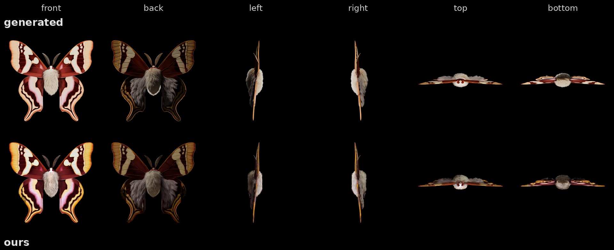
Atlas mothA mounted atlas moth with wings spread, dusty scaled wings in maroon and tan with snake-head pattern tips, feathery antennae and furry velvet thorax, hyperrealistic specimen render
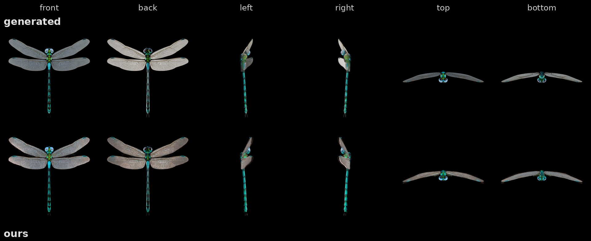
DragonflyA dragonfly with wings outspread, four transparent membranous wings laced with intricate dark venation patterns, iridescent green-blue segmented body, massive compound eyes, hyperrealistic insect render
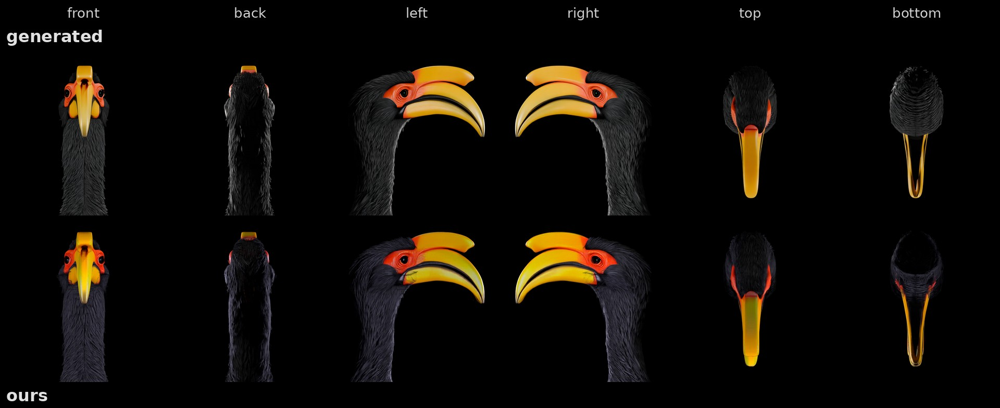
Great hornbillA great hornbill head, massive curved yellow beak topped with a hollow casque, bristled eyelashes, coarse black feathers, skin folds around the eye, hyperrealistic bird render
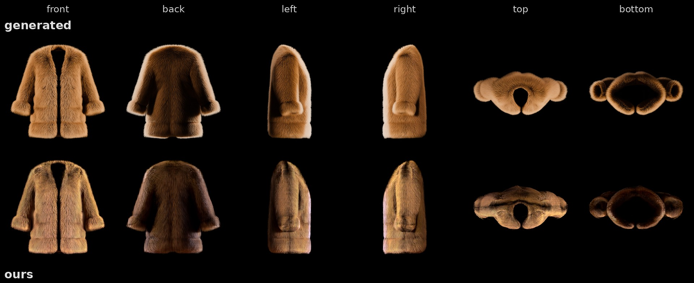
Fur coatA brown fur coat with two long sleeves, a broad collar and an open front. Dense, fine strands of fur cover the body, collar and turned-back cuffs, giving the garment a soft, shaggy appearance. Hyperrealistic garment render.
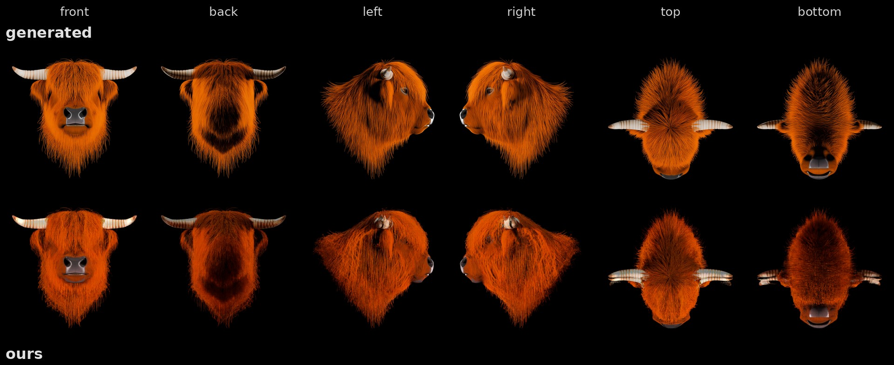
Highland cowA Highland cow face staring forward, long shaggy ginger fringe covering most of the eyes, wide curved horns with ridged annulations, wet black nose, hyperrealistic creature render
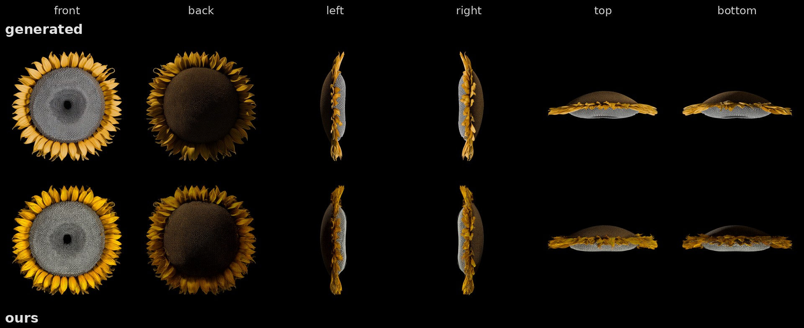
Sunflower headA mature sunflower head in seed, dense spiral Fibonacci arrangement of thousands of individual seeds in dark and light stripes, dried petaled rays curling at the edges, hyperrealistic botanical render
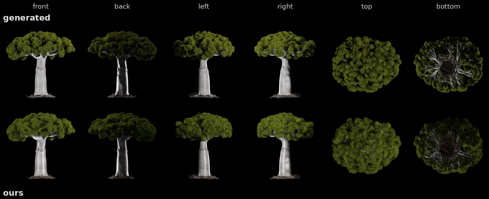
Young baobabA young baobab tree trunk, smooth bulbous swollen gray bark with deep stretch-mark folds and gnarled buttress roots at the base, hyperrealistic tree render
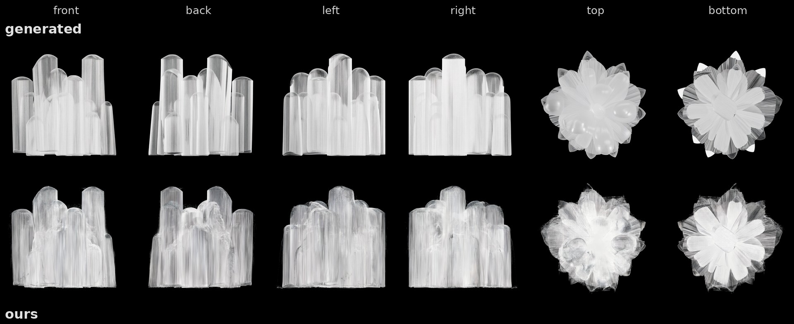
Selenite towersA cluster of selenite tower crystals, tall transparent gypsum columns with striated satin surfaces fanning out in a radiating bouquet, hyperrealistic mineral render
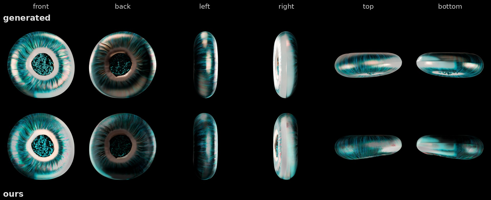
Polished ammoniteA polished ammonite fossil in cross-section, iridescent spiral chambers lined with mother-of-pearl, some chambers filled with calcite crystal druzy, hyperrealistic fossil render
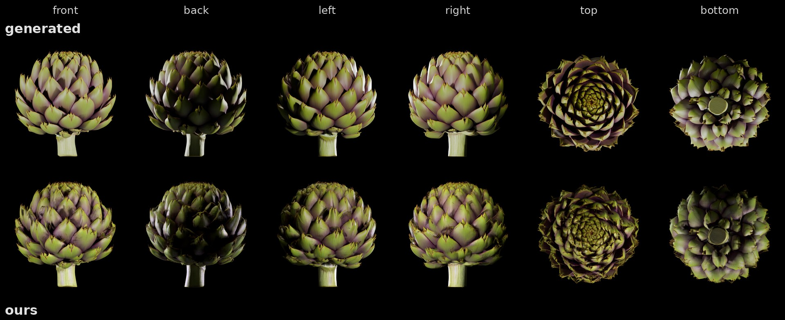
Globe artichokeA whole globe artichoke, tightly packed overlapping thick leathery bracts in green and purple with sharp tips, stem still attached, hyperrealistic vegetable render
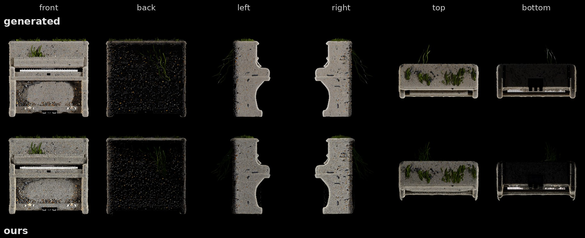
Encrusted pianoA sunken upright piano on the seabed, exterior encrusted with mussels and barnacles in thick colonies, seaweed trailing from the keyboard, hyperrealistic underwater render
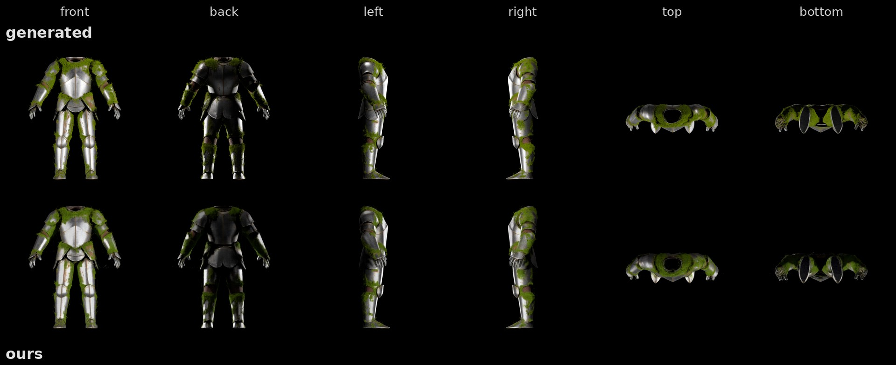
Plate armourAn ancient suit of plate armor propped in a corner, every joint and crevice packed with cushions of emerald moss and sprouting grass blades, rust streaks down the metal, hyperrealistic render
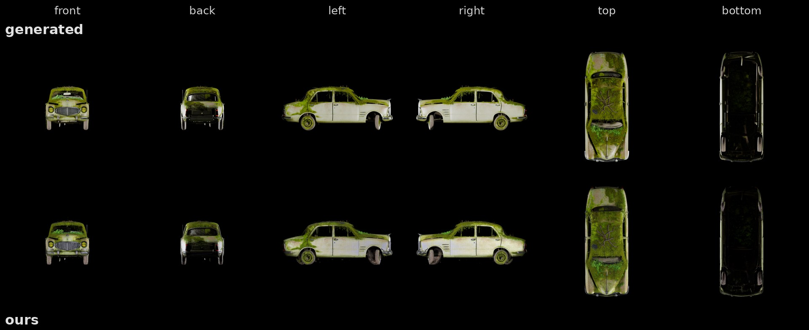
Forest carAn abandoned vintage car in a forest, massive tree roots crushing through the hood and windshield, thick moss blanketing the roof and seats, saplings growing from the interior, hyperrealistic render
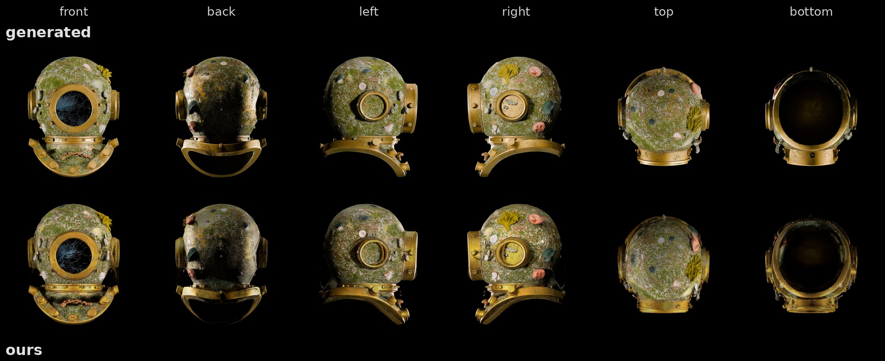
Diving helmetAn antique brass diving helmet recovered from deep water, completely encrusted with coralline algae oysters and tubeworms, porthole glass cracked and fogged, hyperrealistic render
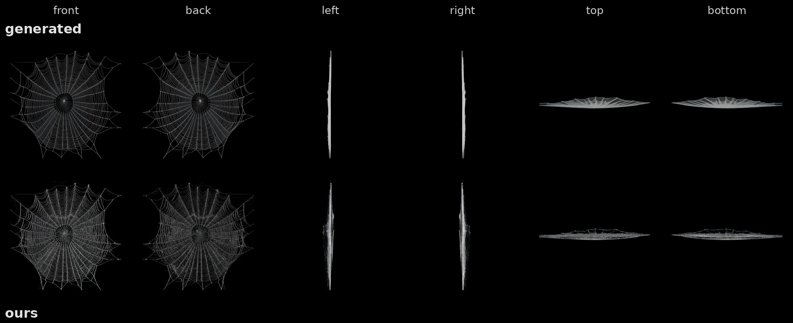
Orb-weaver webA large orb weaver spider web heavy with morning dew, thousands of water droplets beading along the radial and spiral silk threads, every strand catching moisture, hyperrealistic macro renderRomanesco broccoliA whole head of Romanesco broccoli, a dense conical inflorescence in pale chartreuse green built from spiraling rows of pointed buds, each of which is itself a smaller cone of spiraling buds repeating the same pattern down to a granular surface. The spirals wind around a central peak, and a collar of thick, ribbed blue-green leaves with pale midribs and wavy margins wraps the base of the head.
Ground-truth comparisons
Synthetic assets with a known answer.
Left: ground truth. Right: ours.
Tactical soldierTurntable · left GT, right ours · 34.83 dBRelighting · left GT, right ours · 29.59 dBOrcaTurntable · left GT, right ours · 31.74 dBRelighting · left GT, right ours · 27.31 dBCity bicycleTurntable · left GT, right ours · 29.61 dBRelighting · left GT, right ours · 27.55 dBSuit mannequinTurntable · left GT, right ours · 32.45 dBRelighting · left GT, right ours · 27.42 dBSeahorse ornamentTurntable · left GT, right ours · 30.08 dBRelighting · left GT, right ours · 27.73 dBGold pendantTurntable · left GT, right ours · 32.22 dBRelighting · left GT, right ours · 28.81 dBMetal bottlesTurntable · left GT, right ours · 30.61 dBRelighting · left GT, right ours · 25.66 dBMountain bikeTurntable · left GT, right ours · 32.45 dBRelighting · left GT, right ours · 30.24 dBSword setTurntable · left GT, right ours · 35.00 dBRelighting · left GT, right ours · 32.50 dBBirdcage standTurntable · left GT, right ours · 31.04 dBRelighting · left GT, right ours · 30.61 dBSkeleton dollTurntable · left GT, right ours · 30.83 dBRelighting · left GT, right ours · 28.14 dBMonkey skeletonsTurntable · left GT, right ours · 28.64 dBRelighting · left GT, right ours · 28.20 dBPine treesTurntable · left GT, right ours · 30.00 dBRelighting · left GT, right ours · 29.30 dBSunglassesTurntable · left GT, right ours · 29.01 dBRelighting · left GT, right ours · 27.11 dBArmoured mechTurntable · left GT, right ours · 27.83 dBRelighting · left GT, right ours · 24.95 dB
More assets
118 more generated assets.
Generated from photo-style text prompts with two variants of our video generator (RGBA and RGB turntables). Each card: generated input · ours on the same camera path and light · ours relit.
Pitcher plantA Nepenthes pitcher plant trap, a bulbous flask-shaped pitcher with a narrow waist and flaring mouth, its walls mottled green and deep red with a translucent, waxy quality. A ribbed peristome of raised concentric ridges rings the mouth, and a leathery lid overhangs it on a short hinge. Two fringed wings run down the front, and a coiled tendril connects the pitcher to a leaf. Highly detailed real photography.Insect in amberA polished amber nodule, an irregular rounded lump of translucent honey-gold fossil resin with one flat face, containing a well-preserved fly with delicate legs and wings suspended near the center. Internal fractures, tiny bubbles, and swirling cloudy inclusions run through the material, and the unpolished sides retain a rough, crackled, opaque brown crust. Highly detailed real photography.Purple grapesA cluster of dark purple grapes hanging in a tight conical bunch from a woody stem branching into fine green pedicels. Each grape is an oval berry with a slightly translucent, waxy skin covered in a dusty pale bloom, with a small dark scar at the tip. A few berries are pressed against each other and slightly flattened, and the stem shows fine longitudinal ridges. Highly detailed real photography.Amethyst geodeA tall amethyst cathedral geode standing upright on its own flat-cut base, with a rough, knobby grey-brown basalt exterior and a deep open cavity running most of its height. The cavity is lined with densely packed translucent violet quartz points, deepest purple at their tips and nearly colorless at their bases, and the polished rim around the opening shows concentric bands of white and grey agate over a thin glassy chalcedony layer. Highly detailed real photography.Carved cuckoo clockA Black Forest cuckoo clock carved from linden wood, the case shaped like a small chalet with a steep pitched roof, carved oak leaves and vine clusters framing the face, and a perched carved bird above the dial. Two pine-cone-shaped iron weights hang below on brass chains, a carved leaf pendulum hangs from a rod, and a small hinged door sits above the dial. Highly detailed real photography.ViolinAn antique violin featuring a polished maple back with a prominent flamed grain pattern exhibiting strong anisotropic chatoyancy under a clear, glossy amber varnish. The carved scroll, fine f-holes, black ebony fingerboard, and wound metallic strings present a rich interplay of finished wood textures and metallic components. Highly detailed real photography.Pistachio ice-cream coneA waffle cone containing a rounded scoop of pistachio ice cream beneath an irregular dark chocolate shell. Deep embossed squares cover the tapered cone, with a thicker rolled rim and a visible overlapping seam. Static cracks in the glossy chocolate expose softly textured pale green ice cream, including small nut fragments and compact ridges around the scoop’s lower edge. Highly detailed real photography.Pearlescent glass baubleA decorative holiday ornament made of fragile, thin-walled blown glass with an iridescent, mother-of-pearl surface coating. The spherical bulb is topped with a stamped metal cap and wire hanging loop, showing soft rainbow color shifts and clear internal reflections across its surface. Highly detailed real photography.Halved mangosteenA fresh mangosteen fruit split open to reveal a thick, leathery dark-purple pericarp surrounding four fleshy, snow-white seed segments that exhibit soft translucency and juicy surface wetness. Highly detailed real photography.Jointed wooden puppetA wooden marionette with a rounded human face, segmented limbs, and visible joint gaps at the shoulders, elbows, hips, and knees. Fine strings connect the head and limbs to an attached cross-shaped control bar. A small woven vest and folded trousers contrast with smooth painted wood, metal joint pins, carved fingers, and softly textured yarn hair. Highly detailed real photography.Butter croissantA single butter croissant with a crescent form built from a tapered dough triangle rolled into a coil, showing a swollen middle and thinner curled tips. The exterior is deep golden and glossy from egg wash, with paper-thin laminated layers separating into flaking shards along the ridges, while a torn end reveals an open honeycomb crumb of thin translucent dough walls and irregular air pockets. Highly detailed real photography.Gold-and-red silk tasselA large silk drapery tassel with a turned wooden mold head wrapped in gold and burgundy silk thread in a herringbone pattern, a decorative ruff of looped bullion cord, and a full skirt of hundreds of fine silk threads hanging straight to a common length. The silk has a strong anisotropic satin sheen, and a thick braided loop rises from the top of the head. Highly detailed real photography.Metallic green beetleA Chrysochroa jewel beetle with an elongated body and hard, smooth elytra of metallic green iridescence grading into gold and copper along the edges, and a bright violet-blue stripe running lengthwise. The surface has fine dimpled punctures under the polished finish, and the underside is metallic red-orange. Six jointed legs, short serrated antennae, and bulging dark eyes complete the form. Highly detailed real photography.Iridescent ammoniteAn iridescent ammonite fossil with a thick, tightly coiled shell and a pronounced outer whorl surrounding a recessed spiral center. Raised branching ribs cross the curved sides and continue toward the rounded outer rim. Preserved nacreous shell patches have green and copper iridescence, contrasting with rough mineral-filled gaps and a chipped section exposing pale chamber partitions. Highly detailed real photography.Halved figA fresh, split fig revealing a soft, tear-shaped outer skin fading from green to deep purple, opening to expose a dense interior mass of hundreds of tiny, juicy red flowers and crunchy seeds drenched in translucent nectar. Highly detailed real photography.Stained-glass lampAn Art Nouveau leaded stained-glass table lamp with a domed shade made of hundreds of small pieces of opalescent glass in a dragonfly-and-water pattern, each piece bounded by raised soldered copper foil lines. The glass is translucent and subsurface-scattering, with mottled green, amber, and blue tones, and the shade sits on a heavy patinated bronze base cast in a ribbed tree-trunk form. Highly detailed real photography.Red-eyed tree frogA red-eyed tree frog in a crouched posture, its smooth bright green skin glossy and slightly translucent with blue-and-cream vertical stripes along the flanks. It has large bulging red eyes with vertical pupils, orange toes with wide translucent adhesive pads, thin limbs folded tightly against the body, and a pale cream belly. The skin has a moist, subsurface-scattering quality. Highly detailed real photography.Spanish dancer nudibranchA Spanish dancer nudibranch, a large sea slug with a broad, elongated body whose thin mantle margins are ruffled into deep wavy folds. Its skin is velvety crimson mottled with white, slightly translucent at the frilled edges, and glossy with a wet mucous sheen. Two ribbed rhinophores rise from the head, and a rosette of six feathery, branching gill plumes emerges from the rear of the back. Highly detailed real photography.Sea turtleA sea turtle with a heavy carapace built from overlapping, horny scutes showing rich tortoiseshell translucency, amber hues, and fine radial growth rings. The flippers and neck feature textured, leathery skin covered in small, polygonal scales, while tiny barnacles and fine green algae threads cling to the rough edges of the shell. Highly detailed real photography.Red tin robotA wind-up tin robot toy with a box-shaped torso, a rounded head, ribbed tubular arms, and broad hollow metal boots. Folded sheet-metal seams and small tabs define the connected body panels, while a fixed winding key projects from one side. Glossy red-and-cream enamel contrasts with exposed silver joints, punched grille openings, and raised circular eye housings. Highly detailed real photography.Japanese paper lanternA traditional Japanese paper lantern (chochin) constructed from a thin, spiraling bamboo rib frame covered in semi-translucent white washi paper. The paper exhibits a fibrous, uneven texture with embedded plant fibers visible under surface illumination, while the top and bottom are finished with lacquered, glossy black wood rings. Highly detailed real photography.Malachite clusterA stalactitic malachite specimen with unequal knuckled columns fused into a broad, irregular mineral base. Each column has rounded bulbous enlargements and shallow longitudinal furrows, while broken margins reveal compact fibrous layers. The dark emerald exterior combines velvety crystalline crusts with smoother waxy ridges and recessed pockets between neighboring columns. Highly detailed real photography.Vintage globeAn antique terrestrial globe mounted in a brass meridian ring and wooden tripod stand. The globe surface features hand-applied paper gore segments covered in aged, yellowed varnish with fine surface cracking, while the polished wood legs display rich grain depth. Highly detailed real photography.Crowned pigeonA crowned pigeon with a rounded blue-gray body, a small head, and an airy fan-shaped crest composed of slender feathers with delicate terminal branches. Broad folded wings carry overlapping feather layers above a long, compact tail. The breast has dense, softly textured plumage, while the reddish legs have segmented scales and slender toes ending in curved dark claws. Highly detailed real photography.Juniper bonsaiA shimpaku juniper bonsai in a literati style, a slender trunk twisting upward with deeply fissured red-brown bark and a long strip of bleached, smooth deadwood spiraling along one side. Dense pads of fine scale-like foliage in blue-green sit on a few short branches near the top, and a single cascading branch drops below the rim of a shallow, unglazed brown ceramic pot with exposed surface roots. Highly detailed real photography.Pearl nautilus shellA carved nautilus shell featuring a smooth, polished pearlescent exterior that displays soft, rainbow-colored iridescence across its spiral whorls. A cut section reveals the internal camera chambers divided by thin, translucent nacre septa that curve smoothly toward the central siphuncle opening. Highly detailed real photography.Luna mothA luna moth with a stout, softly furred body, feathery antennae, and broad pale green wings arranged in a shallow spread. Each hindwing extends into a long, narrow curved tail. Fine overlapping scales give the wing surfaces a satin texture, with small translucent eyespot centers, darker marginal bands, and delicate veins beneath the thin membranes. Highly detailed real photography.Amethyst clusterA crystal cluster of amethyst growing on a dark, rocky basalt matrix. The specimen features dozens of sharp, hexagonal quartz pyramids ranging from deep violet at the tips to pale, translucent lilac near the base. The crystal faces exhibit glassy lustrous reflections, internal fracture veining, and crisp, razor-sharp edges. Highly detailed real photography.Echeveria rosetteAn Echeveria succulent rosette with about forty thick, spoon-shaped leaves arranged in tight spiraling layers, each leaf tapering to a small pointed tip and edged with a thin translucent margin. The leaves are pale blue-green with a powdery farina bloom that gives a soft matte velvety surface, and the outer leaves show pink and lavender blushes. The compact plant sits on a short thick stem. Highly detailed real photography.King proteaA king protea flower head, a large goblet-shaped bloom with several rings of long pointed bracts in deep pink flaring outward, each bract stiff, slightly fuzzy, and pale-edged. The center is a dome of hundreds of white filamentous florets with silky hairs and dark tips, and the head sits on a thick woody stem with leathery oval leaves. The bracts are slightly translucent at their edges. Highly detailed real photography.Alligator snapping turtleAn alligator snapping turtle with a heavy shell bearing three prominent longitudinal ridges of pyramidal scutes. Its oversized head has a hooked beak, deeply creased skin, and fleshy fringes along the jaw and neck. Thick limbs carry overlapping scales and blunt claws, while the long tapering tail has a raised row of rough, angular plates. Highly detailed real photography.Blue-and-gold macawA blue-and-yellow macaw with a deep curved beak, a broad chest, folded wings, and a long graduated tail of narrow pointed feathers. Layered blue wing coverts contrast with dense golden breast plumage and small dark feather lines across the pale facial skin. The thick gray toes have pronounced scales, and the black beak has a smooth surface with subtle growth ridges. Highly detailed real photography.Old-man marionetteA carved wooden marionette of a bearded old peasant hanging from a wooden control bar by taut black threads to its head, hands, and knees. The face is hand-carved lime wood with pronounced cheeks and a hooked nose, painted in matte flesh tones with glass eyes. It has jointed limbs with carved wooden hands and boots, a coarse linen shirt, a felt vest with brass buttons, and grey wool hair and beard. Highly detailed real photography.Wooden rocking horseA Victorian rocking horse carved from wood with a dappled grey painted coat, mounted on a bow rocker of two long curved rails. It has a real horsehair mane and tail in coarse cream strands, glass eyes, a leather saddle with brass studs, stirrups on leather straps, and a red-and-black bridle with a bit and reins. The paint is crazed with fine cracks over the curved body. Highly detailed real photography.Western saddleA Western saddle with a hand-tooled leather seat and skirts in a floral basket-weave pattern, a raised swelled fork with a leather-wrapped horn, a high cantle, wooden stirrups with leather hoods, and long fenders. Silver conchos and buckles secure the fenders and cinch straps, and the underside is lined with dense cream sheepskin fleece. The leather is oiled dark brown with a soft satin finish. Highly detailed real photography.Glass fishing floatA vintage Japanese glass fishing float, a hand-blown sphere of pale sea-green glass with trapped bubbles and a rough sealed button, encased in a knotted rope net of tarred manila cord. The net forms diamond openings tied at each intersection, gathered into a thick loop at the top, and the glass is translucent with slight thickness variation. Highly detailed real photography.Pink axolotlA leucistic axolotl, a pale pink salamander with a broad flat head, small lidless dark eyes, a wide mouth, and three pairs of external gills branching from behind the head, each gill a feathery stalk lined with fine pink filaments. Its smooth translucent skin shows a faint blush of blood vessels and subsurface scattering, and a thin fin runs along its back into a flattened tail. Highly detailed real photography.Garden snailA garden snail in an extended posture, its spiral shell a globular coil of five whorls with fine growth lines and bands of brown and yellow, the shell slightly translucent with a glossy calcified surface. Its soft grey-brown body is wrinkled and covered in a wet, glossy mucus film, with two long upper tentacles bearing eye spots and two shorter lower tentacles. Highly detailed real photography.Sarracenia pitcher plantA pitcher plant with several upright tubular pitchers connected to a compact root crown. Each pitcher broadens toward a rolled, strongly ribbed mouth beneath a curved hood, with a narrow wing along its outer wall. Thin green-and-burgundy tissue shows branching veins and translucent patches, while the lower tubes remain smooth and merge into slender, overlapping leaf bases. Highly detailed real photography.Desert roseA gypsum desert rose composed of thick, overlapping mineral blades arranged into several connected rosettes. Broad sandy petals intersect at steep angles, forming deep wedge-shaped gaps and an irregular scalloped outline. Fine embedded grains give the beige surfaces a rough matte texture, while thinner blade margins are pale and slightly translucent, with occasional stepped fractures. Highly detailed real photography.Jade dragon ornamentA carved jade dragon statuette crafted from light green, semi-translucent nephrite with soft, milky translucency and a high oily polish. The body features intricately carved, overlapping scales, serpentine curves, undercut claws, and a flowing, fibrous beard, with variations in mineral density creating natural green color banding deep within the stone. Highly detailed real photography.Cloisonne vaseA piece of antique cloisonné enamel artwork on a copper vase base, featuring intricate brass wire filigree filled with glossy, colorful enamel pastes separated by crisp metallic borders. Highly detailed real photography.Rusted anchorA stockless ship's anchor with a heavy cast shank, two broad flat flukes pivoting from a crown, and a large shackle at the top connected to several links of thick stud-link chain. The iron is deeply pitted with layers of orange-brown rust and flaking black paint, with barnacle scars along the flukes. The chain links are oval with a central stud bar. Highly detailed real photography.Alto saxophoneAn alto saxophone with a conical brass body curving into a flared bell, its surface finished in glossy gold lacquer with faint brushed scratches. Dozens of pearl-topped key cups, rod-mounted levers, springs, and leather pads cluster along the tube, with a curved neck and a black hard-rubber mouthpiece with a cane reed and ligature. The bell rim carries hand-engraved floral scrollwork. Highly detailed real photography.Moroccan lanternA Moroccan lantern with a hexagonal brass body pierced in dense arabesque patterns of tiny stars and interlocking geometric openings, a domed top with a finial and hanging ring, and side panels of colored stained glass in amber, blue, and green set behind the pierced metal. The brass has a warm antique patina with slight tarnish, and the glass is translucent with a rippled hand-poured texture. Highly detailed real photography.SitarA sitar with a large hollow gourd resonator of polished toon wood, a long hollow neck bearing about twenty curved brass frets tied on with silk cord, and a second small gourd resonator near the peghead. Seven main strings and eleven sympathetic strings run over bone bridges, with rows of pegs along the neck. The body is covered in fine inlaid bone and floral relief carving with a deep lacquer finish. Highly detailed real photography.Copper diving helmetA copper diving helmet of the classic twelve-bolt pattern with a spherical bonnet, four round glass viewports set in threaded brass rings with protective bar grilles, a brass exhaust valve, an air inlet elbow, and a communications fitting. The bonnet joins a wide breastplate with twelve raised brass studs and wing nuts. The copper has a mottled reddish patina, and the brass fittings are polished. Highly detailed real photography.Shearling bootA shearling winter boot with a broad rounded toe, a tall leather upper, and a thick folded fleece collar. Heavy laces pass through metal hooks and reinforced eyelets above a padded tongue. The brown leather has smooth waxed areas and fine creases around the ankle, contrasting with dense curled wool, exposed stitched seams, and a deeply treaded rubber sole. Highly detailed real photography.Vintage roller skateA quad roller skate with a tall lace-up leather boot mounted above a metal plate and two articulated wheel trucks. Four translucent amber polyurethane wheels have rounded edges and recessed metal bearings. The padded ankle, stitched leather panels, and broad fabric laces contrast with smooth wheel surfaces, threaded adjustment hardware, and a ribbed rubber toe stop. Highly detailed real photography.Sourdough loafA freshly baked loaf of sourdough bread cut open to expose a porous, airy interior crumb with irregular, large gas pockets and thin, translucent gluten webbing. The exterior crust is thick, blistered, and golden-brown, dusted with coarse white flour particles caught within deep, sharp scoring cuts across the top surface. Highly detailed real photography.Soft-shell crabA soft-shell crab prepared for cooking, showcasing a translucent, flexible carapace with brownish-green mottling over delicate, papery walking legs. The damp, glistening outer shell exhibits soft surface reflections, exposed feathery gill structures along the sides, and subtle subsurface tissue translucency. Highly detailed real photography.Oyster on the half shellA fresh, wet oyster on the half shell showing a glistening, irregular mollusk body with semi-translucent gray-white mantle edges, a dark visceral mass, and pooled clear liquor resting inside a rough, layered, and craggy calcium carbonate shell. Highly detailed real photography.ChameleonA veiled chameleon standing with its prehensile tail coiled into a tight spiral, its fused zygodactyl feet split into opposing toe groups. A tall bony head casque rises in a sharp wedge, and the body is covered in granular, bead-like scales of varying sizes, turquoise-green with vertical bands of yellow and orange. A serrated crest of enlarged scales runs along the spine and throat, and its turret-shaped eyes are covered in scaled cone-shaped lids. Highly detailed real photography.Highland cowA Highland cow standing in a relaxed posture, covered in a long, thick, shaggy coat of rusty red-brown hair hanging in matted waves down its sides with a heavy fringe over its eyes. Wide sweeping horns curve up and outward from the top of its broad head, pale keratin with dark tips and fine ridged grooves. It has sturdy legs, a pink muzzle, and a tufted tail. Highly detailed real photography.Rhinoceros beetleA rhinoceros beetle with a compact oval body, a tall curved horn above the head, and a broad armored thorax. Smooth chestnut wing cases have a glossy lacquerlike finish and a distinct central seam. Beneath their rounded edges, six jointed legs carry hooked feet and small spines, while short segmented antennae terminate in compact, layered clubs. Highly detailed real photography.Praying mantisA praying mantis with a long narrow thorax, a triangular head, and large rounded compound eyes. Its folded grasping forelegs have paired rows of substantial spines, contrasting with the slender middle and hind legs. Overlapping leaflike wings cover the segmented abdomen, combining smooth green panels, fine raised veins, and thin, slightly translucent edges. Highly detailed real photography.Spiny lobsterA spiny lobster with a broad armored head, an elongated segmented abdomen, and a wide tail fan composed of overlapping plates. Two exceptionally long antennae have closely spaced ridges and taper to fine points. Rows of sharp projections cover the reddish-brown carapace, while slender jointed legs, smaller feelers, and thin amber membranes introduce finer structures beneath the heavy shell. Highly detailed real photography.Cacao podA cacao pod with a thick elongated body, deep longitudinal furrows, and a broad opening through one side of its leathery husk. Rounded seeds remain packed inside in connected rows beneath glossy white pulp. The red-brown exterior has raised uneven ribs and fine pebbled skin, contrasting with the pale fibrous inner wall and softly translucent seed coatings. Highly detailed real photography.Corn cobAn ear of corn with tightly packed rows of plump yellow kernels and several attached husk leaves folded away from the upper portion. The kernels have rounded glossy surfaces and narrow recessed seams. Pale green husks show strong parallel fibers and thin curled edges, while a tangled tuft of fine reddish silk remains connected around the tapered tip. Highly detailed real photography.Halved pomegranateA ripe, split-open pomegranate section revealing dense, tightly packed arils nestled inside a pale, spongy endocarp. Each ruby-red seed pouch possesses a thin, taut outer membrane enclosing juicy, highly translucent flesh surrounding an opaque, fibrous core, giving off deep subsurface light distribution and glistening surface wetness. Highly detailed real photography.Boulder opalA boulder opal specimen with a rough, matte dark brown ironstone body cut and polished on one face to expose a vein of precious opal. The opal seam is a thin translucent layer with intense play-of-color in green, blue, and violet arising from its internal silica microstructure. The unpolished ironstone shows layered iron oxide bands and small pits. Highly detailed real photography.Green fluorite clusterA cluster of fluorite crystals, interpenetrating translucent cubes in gradients of emerald green and violet, some with beveled edges and stepped faces, all growing from a bed of small white quartz crystals on a rock matrix. The fluorite is glassy and deeply transparent, with internal color zoning in bands parallel to the cube faces and a few small internal fractures. Highly detailed real photography.Quartz crystal clusterA quartz crystal cluster with intergrown hexagonal prisms of unequal heights emerging from a rough mineral base. Broad clear faces meet at crisp edges and terminate in pointed pyramidal tips. Smaller crystals occupy the gaps between larger columns, while cloudy inclusions, fine growth striations, and irregular chipped margins interrupt the otherwise smooth transparent surfaces. Highly detailed real photography.Sushi rollA freshly prepared sushi roll sliced in half to display a colorful cross-section of translucent raw salmon, creamy green avocado, and crisp cucumber sticks wrapped in glossy, dark green nori seaweed. Individual grains of sushi rice show a sticky, semi-translucent starch coating with tiny suspended sesame seeds embedded along the outer perimeter. Highly detailed real photography.Red grapesA fresh cluster of red table grapes attached to a dry, branching woody stem. Each grape possesses a taut, semi-translucent skin coated in a thin, powdery white natural bloom, displaying soft internal light scattering and deep ruby tones beneath the matte surface dust. Highly detailed real photography.Vintage leather ballA vintage leather football showing thick, dark brown leather panels with heavy grain pores, hand-stitched white laces, exposed seam threads, and scuffed, worn highlights across the leather surface. Highly detailed real photography.Algae-covered river pebbleA wet, smooth river pebble coated in a thin layer of translucent green river algae, showing soft light scattering across the damp stone surface and microscopic fibrous plant strands. Highly detailed real photography.Enamel colanderAn enameled steel colander with a hemispherical bowl perforated in concentric rings of small round holes, a rolled rim, two riveted looped handles, and a short pedestal foot ring. The enamel is speckled cream with a cobalt blue rim, glossy and slightly rippled over the pressed metal, with fine chipping at hole edges revealing dark grey steel beneath. Highly detailed real photography.Tartan bagpipesA set of Great Highland bagpipes with a tartan cloth bag cover in green and blue with a fringed edge, three long drones of black African blackwood with turned ivory-colored mounts and nickel ferrules, a chanter with a conical bore and finger holes, and a blowpipe with a mouthpiece. Twisted silk cords with heavy tassels bind the drones together, and the bag cover has a soft brushed wool texture. Highly detailed real photography.Model steam engineA working model horizontal steam engine on an integral cast-iron base plate, with a polished brass boiler wrapped in wooden lagging strips bound by brass bands, a tall smokestack, a large spoked flywheel, a single cylinder with a slide valve, a connecting rod and crank, a fly-ball governor with two brass weights on pivoting arms, a sight glass, a safety valve, and copper steam lines. The castings are green enamel with red pinstriping. Highly detailed real photography.Galileo thermometerA Galileo thermometer, a tall sealed glass cylinder filled with clear liquid, containing five small hand-blown glass spheres each partly filled with tinted liquid in red, blue, green, yellow, and violet, each sphere hung with a small brass tag disc on a thin wire. The cylinder has a domed top and rests in a turned wooden base. The glass is thick and strongly refractive. Highly detailed real photography.Dewy succulent leafA fresh, dew-covered leaf of a succulent plant showing a thick, fleshy interior, taut semi-translucent epidermal skin, and a powdery, blue-green waxy bloom coating. Highly detailed real photography.Vietnamese conical hatA Vietnamese conical palm-leaf hat with a smooth pale straw cone built from overlapping dried palm leaves stitched in fine radial seams over a frame of concentric bamboo rings, each ring visible as a faint circumferential ridge. The leaf is thin and translucent, and the inside has a woven bamboo headband and a chin strap of colorful silk ribbon. The rim is neatly bound with thread. Highly detailed real photography.Locking pliersA pair of locking pliers with curved serrated jaws, two shaped steel handles, and an exposed compound linkage between them. A knurled adjustment screw extends from the lower handle, beside a smaller release lever. Brushed metal surfaces contrast with darker pivot recesses, stamped reinforcing ribs, and the sharply defined teeth along the opposing jaw faces. Highly detailed real photography.Woodworking hand planeA cast-metal hand plane with a long flat sole, raised sidewalls, and a curved wooden rear handle behind an angled steel blade assembly. A rounded wooden front knob anchors the opposite end. The exposed lever cap, knurled adjustment wheel, and narrow mouth opening create layered mechanical detail, contrasting with smooth polished wood and dark textured cast iron. Highly detailed real photography.Long pine coneA mature sugar pine cone, an elongated cylinder tapering to a rounded tip, composed of spiraling woody scales opened outward from a central axis. Each scale is a thick tongue with a raised diamond-shaped apophysis, a dark umbo at the tip, and thin papery seed wings tucked beneath. The scales are matte tan with darker bases, and glossy amber resin beads cling to their tips. Highly detailed real photography.Honeycomb blockA chunk of raw honeycomb broken from a hive frame, with a wall of hexagonal wax cells in perfect tessellation on both faces. Some cells are capped with matte pale beeswax; others are open and filled with amber honey that is deeply translucent. The wax walls are thin and subsurface-scattering, ranging from cream to yellow to dark brown at the older center, and thick honey clings in suspended drops along the broken edge. Highly detailed real photography.PomegranateA ripe pomegranate split open, revealing chambers packed with hundreds of ruby-red arils, each a glossy, translucent juice-filled sac with a pale seed visible inside. The chambers are separated by thin cream-colored membranes with a leathery matte surface, and the thick outer rind is deep crimson with a slightly waxy sheen and a dried crown-shaped calyx at the top. Highly detailed real photography.PineappleA whole pineapple with a barrel-shaped body covered in a tessellation of hexagonal eyes arranged in spiraling rows, each eye a raised, slightly ridged scale with a dry pointed tip and a small brown bristle at the center. The rind is golden-orange mottled with green and brown, slightly waxy, and topped by a crown of long, stiff, spiky leaves with serrated edges. Highly detailed real photography.CroquemboucheA croquembouche, a tall cone of dozens of small cream-filled choux pastry puffs stacked in spiraling rings and glued with hardened amber caramel that forms glossy drips and pooled joints between puffs. Fine threads of spun sugar wrap the entire tower in a tangled translucent web, and the pastry puffs are golden with cracked, matte, slightly irregular tops. Highly detailed real photography.Barrel cactusA fishhook barrel cactus, a stout ribbed cylinder with about twenty deep vertical ribs bearing rows of areoles, each areole a woolly white tuft sprouting a cluster of long, curved central spines with hooked tips and several thinner radial spines. The spines are red-brown fading to grey, and a ring of yellow-orange cup-shaped flowers and dry woolly fruit crowns the flat top. The skin is dull blue-green. Highly detailed real photography.Head of garlicA fresh, unpeeled head of garlic with multiple plump cloves wrapped in thin, papery white and violet-streaked outer skins. The parchment-like skin layers are semi-translucent, dry, and crinkled, revealing the smooth, pale, ivory-colored cloves underneath. Highly detailed real photography.Knotted rope fenderA knotted rope fender with a thick elongated body enclosed by tightly interwoven bands of natural fiber cord. Large crossing knots form a raised diamond network around a denser central core, and an integral rope eye projects from one end. Individual strands have twisted ridges, short frayed fibers, and a muted waxy sheen at compressed junctions. Highly detailed real photography.Woven straw hatA woven straw sunhat with a rounded crown, a broad gently curved brim, and a thick bound outer edge. Narrow braided strands form concentric rows joined by fine stitching, with small gaps between the fibers. The straw varies naturally from pale cream to warm tan, and the crown has a slightly denser weave than the flexible brim. Highly detailed real photography.Silk brocade cushionAn antique hand-woven silk brocade cushion featuring raised gold and crimson metallic threads interwoven with soft, tufted velvet segments. The fabric displays anisotropic luster along individual yarn loops, with fine, stray micro-fibers forming a delicate halo around the edges. Intricate geometric floral relief pattern steps up from the rich, woven base layer. Highly detailed real photography.Old wooden pulleyAn old, weathered wooden pulley with a grooved cast-iron wheel mounted inside a thick oak frame held together by rusted iron straps, showing deep wood grain splits and rough metal corrosion. Highly detailed real photography.Peacock mantis shrimpA peacock mantis shrimp with a segmented carapace in metallic green, blue, and orange, iridescent along the plate edges. It has two large stalked eyes with a triple-band pupil structure, long thin antennae, and a pair of enormous club-shaped raptorial appendages folded tightly beneath the head. The abdominal segments are armored in overlapping plates with red-spotted margins, ending in a broad fan-shaped tail with leopard-spotted uropods. Highly detailed real photography.Sesame braided breadA six-strand braided challah loaf, tall and oval, with the plaited strands crossing over one another in a tight interlocking pattern that swells at the center and tapers at both ends. The crust is deep mahogany and glossy from egg wash, dusted with sesame and poppy seeds that collect in the seams between strands, with pale cream dough exposed in the stretched gaps. Highly detailed real photography.Moon mothA luna moth with broad pale lime-green wings outstretched, each hindwing ending in a long curved tail, and each wing bearing a translucent eyespot ringed in yellow and maroon. The wings have a dusting of fine scales and a soft velvety finish, edged in dark maroon along the forewing margins. Its body is thick and covered in dense white fur-like hair, with feathery yellow-brown antennae. Highly detailed real photography.Cape gooseberry, skeletonized huskA cape gooseberry with a fully skeletonized husk, a lantern-shaped papery calyx whose tissue has weathered away to leave only a delicate lattice of thin pale veins, through which a glossy orange berry is visible at the center. The berry is smooth and slightly translucent with a waxy sheen, and the husk narrows to a small stem at the top and tapers to a point at the bottom. Highly detailed real photography.Bladder wrack seaweedA bladderwrack frond with flattened olive-brown branches, repeated forked divisions, and paired oval air bladders embedded along prominent midribs. The leathery ribbons have uneven edges and broader knobbly terminal sections. Smooth, slightly translucent tissue contrasts with the raised bladder walls and granular tips, while the lower branches converge into a short stem and compact attachment disc. Highly detailed real photography.Tenor saxophoneA tenor saxophone with a long curved brass body, a broad flared bell, and a narrow hooked neck ending in a dark mouthpiece. Rows of padded key cups connect through fine rods, hinges, and spring wires along the tube. Mother-of-pearl touchpieces contrast with polished brass, darker recessed joints, and the softly textured cork beneath the mouthpiece. Highly detailed real photography.Monarch chrysalisA chrysalis of a monarch butterfly displaying a smooth, pale jade-green outer shell with high translucency. Along its upper rim is a row of raised, metallic gold dots that exhibit brilliant mirror-like reflectivity, while the semi-transparent cuticle reveals faint, dark outlines of developing wing patterns beneath the surface. Highly detailed real photography.Macrame hanging planterA macramé plant hanger of thick cream cotton cord, knotted in square knots and spiral half-hitch chains descending from a wooden ring, splitting into four strands that cradle a terracotta pot in a knotted net. Long frayed fringe hangs from the bottom gathering knot. The pot holds a Boston fern whose arching fronds are lined with dozens of small toothed leaflets in bright green, draped in layers over the rim. Highly detailed real photography.Sea nettle jellyfishA Pacific sea nettle jellyfish with a broad domed bell in translucent amber-brown, marked with a radiating pattern of darker reddish stripes and fine bumps. From the bell margin hang twenty-four long, thin, dark maroon tentacles, and from the center descend four frilly oral arms, ruffled into loose spiraling folds and slightly translucent white. The bell material is jelly-like and subsurface-scattering. Highly detailed real photography.Sorghum broomA traditional corn broom with a long hardwood handle, bound to a thick head of stiff broomcorn fibers by several rows of wire wrapping and tight cross-stitched cord bands that flatten the head into a fan. The fibers are straw-yellow with fine ridges and taper into splayed fraying tips, and the topmost fibers are folded over the handle beneath the binding. Highly detailed real photography.Eucalyptus branchA eucalyptus seed branch with a forked woody stem, narrow leathery leaves, and clusters of small cup-shaped capsules on short stalks. The capsules have thick rounded rims, recessed valve openings, and subtly ribbed sides. Waxy blue-green leaves contrast with the rough brown bark and dry gray seed cases, while their curved edges and raised midribs give the branch a varied silhouette. Highly detailed real photography.Satin ballet shoesA satin ballet pointe shoe with a rigid rounded toe box, a narrow waist, and an open heel section bordered by a gathered drawstring channel. Pale pink satin forms small pleats around the toe and has a directional sheen. Long attached ribbons contrast with the matte leather sole, reinforced stitching, and softly textured fabric lining. Highly detailed real photography.TambourineA tambourine with a shallow circular wooden frame, a taut pale hide head, and paired metal jingles mounted in repeated slots around the rim. The thin jingles have shallow domed centers and unevenly worn edges. Small attachment pins, layered wood grain, and a stitched leather grip contrast with the smoother membrane and the narrow gaps between overlapping metal discs. Highly detailed real photography.Seahorse specimenA dried sea horse specimen featuring a rigid, segmented bony armor ring structure, a curved prehensile tail, a small tubular snout, and a delicate, semi-translucent dorsal fin. Highly detailed real photography.Vintage teddy bearAn antique jointed teddy bear seated with limbs splayed, made of long-pile golden mohair that has thinned to reveal woven backing at the nose bridge and paw pads. It has a humped back, elongated curved arms, a pointed snout with a stitched black thread nose, small black glass eyes, and cupped ears, along with felt paw pads with claw stitching and visible disc joints at the shoulders and hips. Highly detailed real photography.Wooden block and tackleA wooden block-and-tackle assembly with two triple-sheave blocks of ash, each shell carved with rounded cheeks bound by iron straps and a swivel hook, and three brass sheaves set in each block. Thick tarred hemp rope threads through the sheaves in six falls, its three-strand twist clearly visible, and a long free tail of rope with a whipped end hangs from the lower block. Highly detailed real photography.BiplaneA 1930s biplane trainer with two fabric-covered wings of unequal span joined by N-shaped struts and crossed bracing wires, a seven-cylinder radial engine exposed at the nose with cooling fins and a wooden two-blade propeller, tandem open cockpits with windscreens, fixed landing gear with wire-spoked wheels, and a tail with rudder and elevators. The fabric is taut doped yellow with visible rib stitching, and the fuselage is blue. Highly detailed real photography.Jet engineA bare seven-cylinder radial aircraft engine with cylinders arranged in a star around a central crankcase, each cylinder wrapped in dense parallel cooling fins and topped by a domed head with two rocker boxes and exposed pushrod tubes. A ring of steel exhaust pipes curves behind the cylinders, ignition wires run from a ring harness, and a splined propeller shaft protrudes from the front. The finish is matte grey crackle paint with polished aluminum accents. Highly detailed real photography.Red-brown violinA full-size violin with a spruce top of fine straight grain and a one-piece flamed maple back showing strong chatoyant figure under a warm red-brown oil varnish. It has two elegantly curved f-holes, inlaid purfling of black and white strips along the edges, a hand-carved scroll with four ebony pegs, an ebony fingerboard and tailpiece, four strings over a carved maple bridge, and a chinrest. Highly detailed real photography.Bicycle rear derailleurA bicycle rear derailleur with a compact articulated metal body and a long narrow cage containing two toothed pulley wheels. Offset pivots, a coiled spring, and a curved cable guide create several connected levels around the mounting joint. Matte black composite sections contrast with brushed aluminum links, steel fasteners, and the fine molded ridges on the pulley teeth. Highly detailed real photography.Quadcopter droneA compact quadcopter drone with four carbon-fiber arms connected to a central frame of stacked plates and spacers. Each arm ends in a cylindrical motor and a thin two-bladed propeller. A fitted battery is secured by a woven strap, with exposed insulated wires, metal fasteners, and curved protective guards contrasting with the smooth polymer blades and textured composite structure. Highly detailed real photography.Anatomical heart modelA detailed anatomical model of a human heart constructed from semi-translucent, flexible silicone to reveal internal chambers, muscular trabeculae, and delicate heart valves. The exterior displays a network of branching coronary arteries and veins filled with opaque red and blue fluids, contrasting sharp vascular conduits against soft, light-scattering myocardial walls. Highly detailed real photography.Gold-rimmed glassesA pair of antique wire-rimmed spectacles featuring ultra-thin gold-filled frames, flexible cable temples, and round, prescription glass lenses showing subtle edge thickness, blue anti-reflective coatings, and nose pad details. Highly detailed real photography.Porcelain insulatorA porcelain electrical insulator with several broad umbrella-shaped flanges arranged along a thick central core. Each flange has a smoothly rounded upper surface, a thinner outer rim, and concentric reinforcing ribs beneath it. Glossy pale gray glaze contrasts with the rougher metal end fittings, including a threaded steel pin and a heavy galvanized attachment cap. Highly detailed real photography.Queen conchA queen conch shell with a heavy spiral body, a raised pointed spire, and a broad flared outer lip surrounding an elongated opening. Rounded knobs form a crown along the upper whorl, while smaller growth ridges follow the curved exterior. The rough cream-and-tan outer shell contrasts with the smooth glossy pink aperture and its thick, softly rolled edge. Highly detailed real photography.Peacock-feather fanA mature peacock feather fan assembled with overlapping tail feathers anchored in a carved mother-of-pearl base. Each feather features a central chitinous shaft supporting thousands of microscopic, iridescent barbules that shift natively between brilliant teal, violet, and gold. The pearlescent shell base exhibits smooth, milky translucency with soft rainbow sheen across its sculpted curves. Highly detailed real photography.Brass diving helmetA detailed miniature model of an old-fashioned brass diving helmet, complete with heavy circular viewing ports, riveted metal seams, brails, and a textured, oxidized copper neck ring. Highly detailed real photography.Buttermilk pancakesA stack of three freshly cooked buttermilk pancakes topped with a melting pat of semi-translucent yellow butter and drizzled with glossy, amber maple syrup. The syrup flows down the porous, browned sides of the pancakes, filling tiny surface pockets and creating thick, clear liquid drips along the edges. Highly detailed real photography.Sliced roast beefA freshly cut slice of rare roast beef displaying a rich, deep red center with a moist, fibrous texture surrounded by a dark, seared outer crust. Tiny droplets of clear meat juices and melted fat glisten across the cut muscle bundles and thin interstitial fat lines. Highly detailed real photography.Dragon-vein agateA cut dragon agate stone polished into a smooth cabochon, displaying intricate spiderweb-like fracture patterns filled with translucent chalcedony inside a milky quartz matrix. The stone exhibits deep internal spatial contrast between opaque dark vein networks and light-scattering mineral pockets. Highly detailed real photography.Mother-of-pearl buttonsA stack of raw, polished mother-of-pearl buttons showing natural iridescence, iridescent pink and green sheen, fine drilled thread holes, and subtle rim bevels. Highly detailed real photography.Brass kaleidoscopeAn antique brass kaleidoscope featuring a textured leather barrel and an glass object chamber filled with colorful, translucent glass shards and beads. Highly detailed real photography.